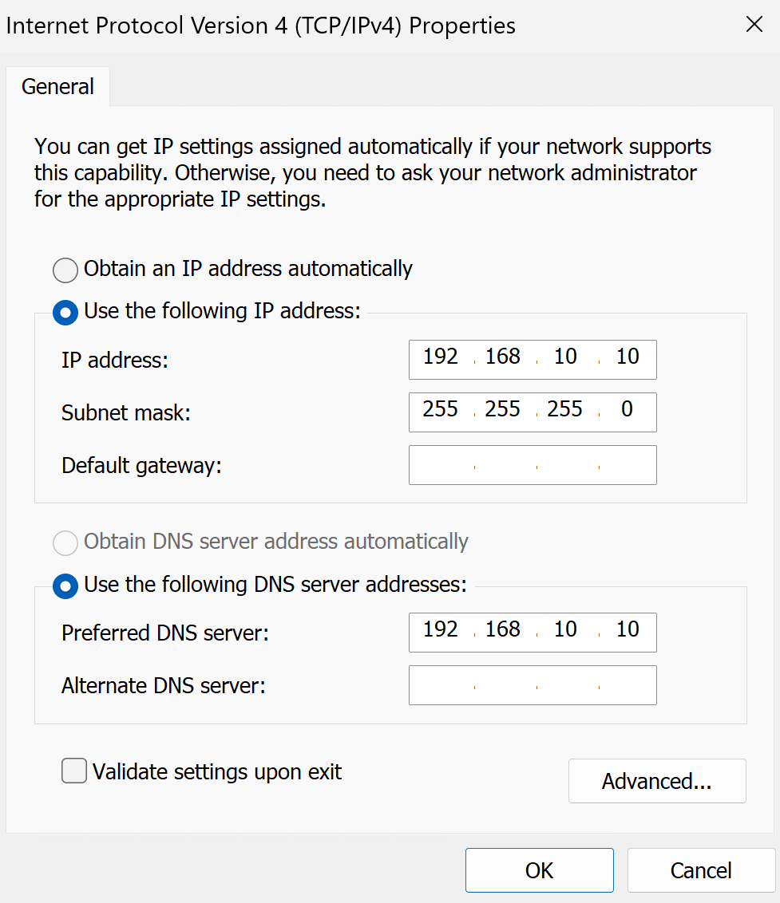
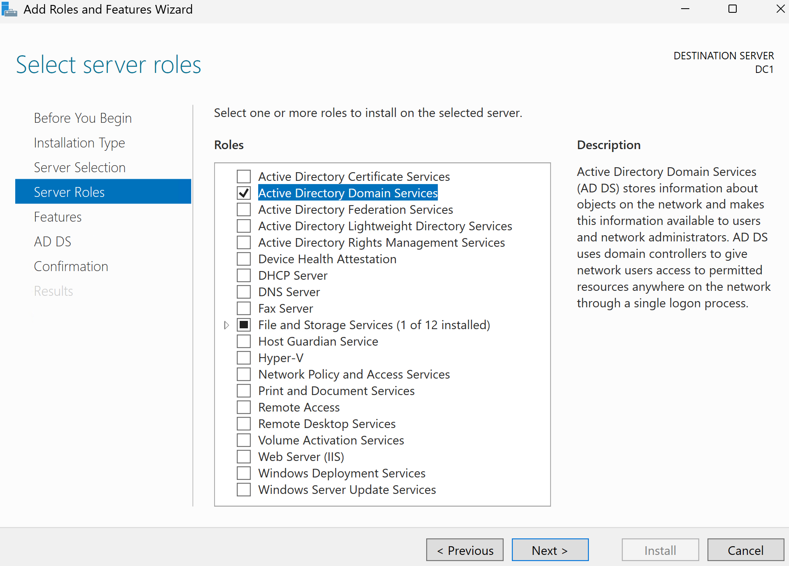
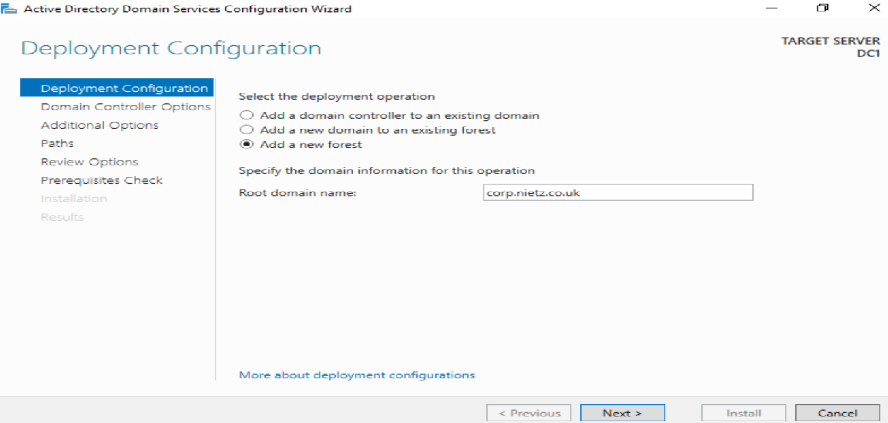
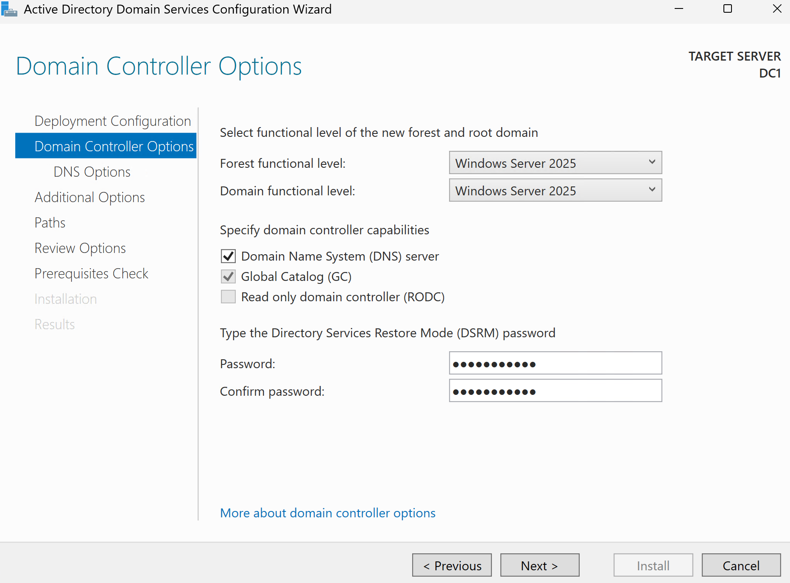
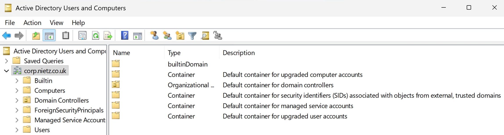
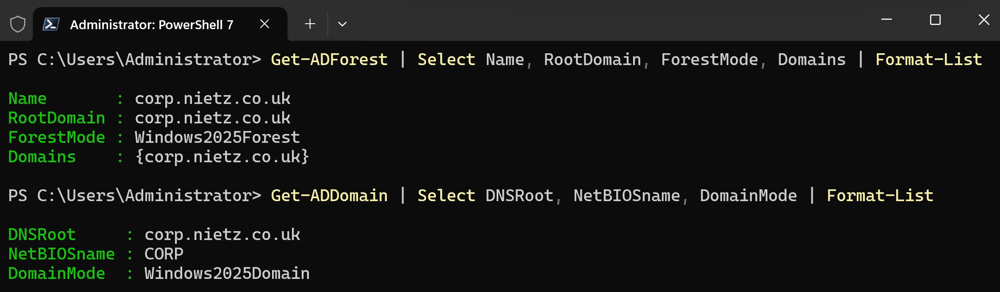
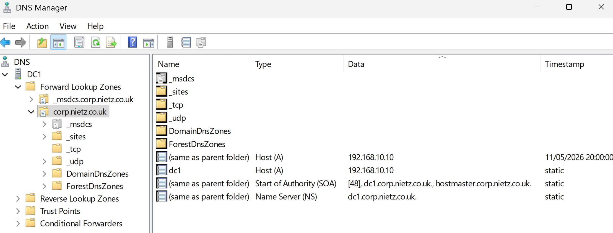
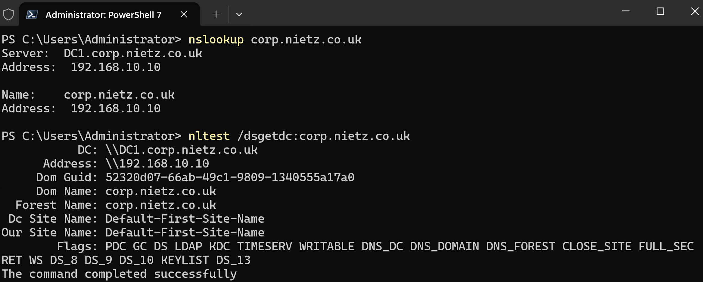
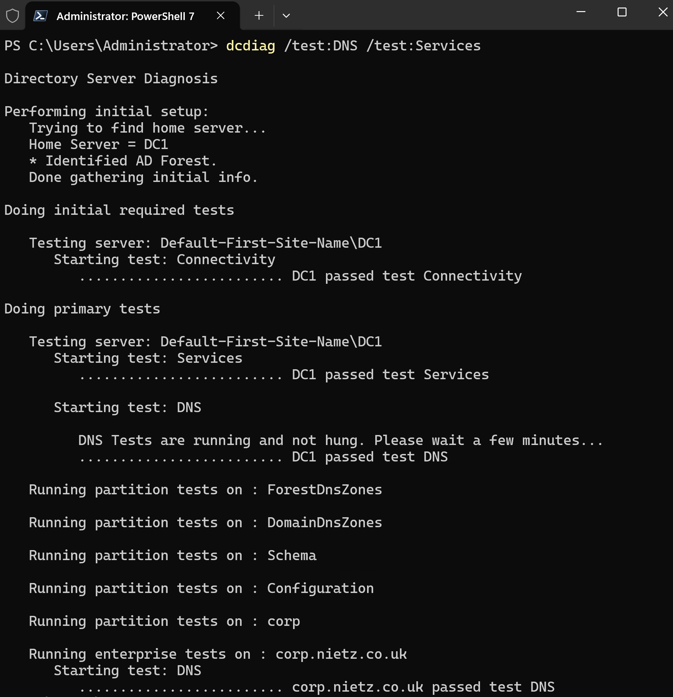

Lab 01: Domain Controller Foundation
Built the first Windows Server domain controller for corp.nietz.co.uk, establishing the Active Directory and DNS foundation for authentication, Group Policy, file services and future hybrid Microsoft identity integration.
Overview
In this lab, I provisioned DC1, installed Active Directory Domain Services, promoted the server to a domain controller, and created the internal Active Directory forest corp.nietz.co.uk with NetBIOS name CORP.
This lab establishes the identity foundation for later domain join, user administration, file share, Group Policy, hybrid identity, and Intune labs.
Objective
The objective was to build a stable on-premises Active Directory domain controller with integrated DNS and confirm that authentication, directory services, and domain controller discovery were working correctly for future hybrid Microsoft labs.
Environment
| Component | Value |
|---|---|
| Company | Nietz Ltd |
| Domain Controller | DC1 |
| Operating System | Windows Server 2025 |
| AD Domain | corp.nietz.co.uk |
| NetBIOS Name | CORP |
| Tenant/Public Domain | nietz.co.uk |
| DC1 Static IP | 192.168.10.10/24 |
Configuration
1. Server Identity
I renamed the Windows Server virtual machine to DC1 so the domain controller had a clear and consistent identity across Active Directory, DNS, screenshots, and future support documentation.
2. Server Network Configuration
I configured DC1 with a static IP address and set DNS to point to the server itself.

3. AD DS Role Installation
I installed the Active Directory Domain Services role from Server Manager and added the required management tools.

4. New Forest Creation
I promoted DC1 and created a new forest using corp.nietz.co.uk as the root domain.

5. Domain Controller Promotion
I reviewed the promotion settings, kept DNS Server and Global Catalog enabled, confirmed CORP as the NetBIOS name, and completed the promotion.

6. ADUC Validation
I opened Active Directory Users and Computers and confirmed that the corp.nietz.co.uk domain tree was visible.

7. PowerShell Validation
I validated the forest and domain configuration using administrative tools and confirmed that the Active Directory structure was functioning correctly.

8. DNS Zone Validation
I opened DNS Manager and confirmed that the corp.nietz.co.uk forward lookup zone existed with the correct domain controller records.

9. DNS and Domain Controller Discovery
I validated DNS resolution and domain controller discovery to confirm that clients could locate and communicate with DC1 successfully.

10. Domain Controller Health Check
I validated domain controller health and confirmed that DNS, Active Directory, and Netlogon services were functioning correctly.

Validation
The lab was validated when DC1 successfully functioned as a domain controller, Active Directory Users and Computers displayed the corp.nietz.co.uk domain structure, DNS Manager showed the AD-integrated forward lookup zone, and PowerShell confirmed the forest and domain configuration.
DNS resolution and domain controller discovery were successfully validated, confirming that corp.nietz.co.uk resolves to DC1 and that the domain controller can be located for authentication and domain join operations.
Domain controller health checks confirmed that DNS, Active Directory, and core domain services were healthy, leaving the environment ready for the next lab.
Key Technical Outcomes
This lab reinforced how critical DNS is to Active Directory and how authentication, domain join, Group Policy, and user logon all depend on healthy name resolution.
Summary
- I configured DC1 with a static IP address and DNS pointing to itself.
- I installed the Active Directory Domain Services role.
- I created the
corp.nietz.co.ukforest and confirmed NetBIOS nameCORP. - I validated DNS resolution, domain controller discovery, and core domain controller health.
- I created the identity foundation required for domain join, Group Policy, file services, hybrid identity, and future Intune labs.
- This lab provides the AD DS and DNS foundation used by later domain join, Group Policy, file services and hybrid identity labs.